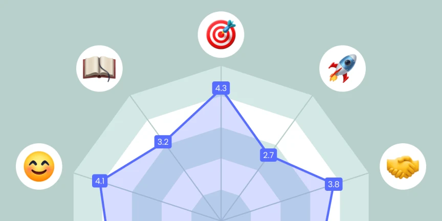

Finalizando el Sprint
Revisión del Sprint o Review
En la reunión de Revisión del Sprint o Sprint Review, el equipo muestra el trabajo realizado durante el Sprint, y se proporciona retroalimentación, realizando una evaluación formativa.
A esta reunión debe asistir todo el equipo, el Scrum Master y Product Owner. Además pueden asistir personas interesadas, también llamados stakeholders.
Durante la reunión de Revisión, se debe comprobar que cada historia o requerimiento cumple los criterios de aceptación, y que cumple con la definición de terminado. Es decir, que realmente se ha realizado todo lo que se había solicitado. En este momento se adapta las lista de historias de usuario o requisitos en el Product Backlog si es necesario, para poder incorporarlos en siguientes Sprints.
Al realizarse una Revisión tras cada Sprint, se puede corregir cualquier desviación o falta de calidad en las entregas de forma rápida, lo que nos asegura mejores resultados.
Haciendo revisiones iterativas y cada poco tiempo, el alumnado obtiene una retroalimentación constante, y debe mejorar los puntos que se le indiquen. Estamos evaluando, no sólo el resultado final, sino el proceso de trabajo.
No se trata de hacer una presentación PowerPoint para ese día, sino mostrar el avance del producto realizado. En esta reunión también se analiza el trabajo qué quedó por realizar.
Reflexión
¿Cómo debe presentar el equipo?
En la Revisión también calculamos la velocidad del equipo, que es la cantidad de trabajo que se ha realizado en el Sprint. Se calcula sumando los puntos de esfuerzo de los post-its que se han completado en el Sprint. Esto nos permite prever cuánto trabajo se puede realizar en los siguientes Sprints.
Retrospectiva o Sprint Retrospective
En la reunión de Retrospectiva, el equipo analiza cómo ha ido el Sprint, y cómo se puede mejorar en el siguiente Sprint. Debe ser una reunión separada de la Revisión del Sprint, pero se puede hacer en el mismo día dejando un descanso entre ellas para que el equipo se despeje. No deben pasar muchos días entre la Revisión y la Retrospectiva, ya que se pueden olvidar detalles importantes.
Estas son las tres preguntas que se deben responder en la reunión de retrospectiva:
- ¿Qué ha ido bien?
- ¿Qué no ha ido tan bien?
- ¿Qué se puede mejorar?
"Bertrand Rusell"
¿Para que repetir errores antiguos habiendo tantos errores nuevos que cometer?
"Noel Clarasó"
Cita siempre les errores propios antes de referirte a los ajenos. Así nunca parecerá que presumes.
Se debe fomentar la comunicación abierta, y se debe fomentar la crítica constructiva. No se trata de buscar culpables, sino de buscar soluciones a los problemas que se han detectado, tanto en el producto como en el proceso de trabajo.
El Scrum Master debe asegurarse de que las críticas son constructivas, y de que se buscan soluciones a los problemas que se han detectado. No se debe buscar culpables, ni usar frases cómo "tú has cometido este fallo". Se debe plantear con frases cómo "cómo podemos evitar que se cometa ese fallo". También debe encargarse de que no sólo se hable de los errores. Si hay cosas que se han hecho bien, hay que ponerlo en valor y procurar que se siga haciendo así.
La Sprint Retrospective se hace eco de los tres pilares de Scrum: transparencia, inspección y adaptación.
- La transparencia es necesaria ya que los miembros del equipo deben compartir las dificultades y aprendizajes del último Sprint.
- La inspección es fundamental porque el objetivo de una retrospectiva es evaluar lo sucedido y determinar las mejoras necesarias.
- La adaptación es esencial ya que el siguiente paso lógico después de una Retrospectiva de Sprint es implementar estas mejoras.
Las retrospectivas de Sprint son esenciales por varias razones:
- Mejorar el rendimiento del equipo
- Fortalecer la colaboración y la comunicación, fomentando una mejor comprensión de las tareas y objetivos de todos, una resolución eficaz de problemas y una cultura de confianza y respeto mutuo.
- Identificar y resolver problemas. Sacar al "elefante" de la sala.
- Crecer personal y profesionalmente, creando un plan de acción buscando la mejora continue.
En cuánto a quién debe asistir a la Retrospectiva, muchos equipos son más sinceros si están solos, junto con el Scrum Master. Pero también puede ser interesante que asista el Product Owner, ya que puede aportar una visión diferente.
Hay diferentes dinámicas de retrospectivas que se pueden utilizar para llevar a cabo las retrospectivas de un modo divertido.
Dinámicas de retrospectivas
Si hacemos la Retrospectiva siempre igual los equipos acaban aburriéndose. Por eso es importante cambiar la dinámica de la retrospectiva.
Podemos valorar si es mejor hacer las valoraciones individuales de manera anónima o no. Si se hace de manera anónima se puede conseguir que los miembros del equipo sean más sinceros, pero también se puede conseguir que no se hagan responsables de sus palabras.
Las retrospectivas deben prepararse con antelación, y se debe tener en cuenta que se debe fomentar la participación de todos los miembros del equipo.
Los pasos para realizar una retrospectiva son los siguientes:
- Preparación: Se debe preparar la reunión con antelación, y se debe tener en cuenta que se debe fomentar la participación de todos los miembros del equipo.
- Presentación: Se debe presentar la dinámica de la retrospectiva, y se debe explicar a los miembros del equipo cómo se va a realizar la retrospectiva.
- Recopilación de datos: Se deben recopilar los datos de la retrospectiva, y se deben recoger las opiniones de todos los miembros del equipo.
- Análisis de los datos: Se deben analizar los datos recogidos, y se deben buscar soluciones a los problemas que se han detectado.
Estrella
Se basa en usar un diagrama con forma de estrella de mar que permite crear cinco áreas específicas para tratar, evitando así centrarse solo en lo bueno o en lo malo.

Estas cinco áreas son las siguientes:
- Comenzar a hacer: Cosas nuevas a probar que nos gustaría poner en marcha.
- Más de: Prácticas que aportan valor. Por lo tanto, las exprimiremos al máximo, les sacaremos todo el jugo posible, ya que son útiles y positivas en nuestro proyecto.
- Seguir haciendo: Cosas buenas que nos aportan valor y que debemos seguir haciendo tal y como las hacemos actualmente.
- Menos de: Prácticas que no están ayudando tanto como se esperaba, o que simplemente no son útiles. Por lo tanto, tenemos que empezar a abandonar esta línea de trabajo o al menos parte de ella.
- Dejar de hacer: Prácticas que no son útiles o no agregan valor. Por lo tanto hemos decidido eliminarlas completamente.
Se dedican unos minutos a leer en voz alta las anotaciones del grupo, argumentando las decisiones de cada uno.
Tras la exposición se crea en equipo un plan de acción para poner en práctica de inmediato, guardando la imagen del escenario actual para poder compararla con la siguiente retrospectiva.
Barco
Debemos dibujar un barco en el que se represente el Sprint. El significado de cada uno de los elementos del dibujo es el siguiente:
- La costa, es el objetivo a alcanzar.
- El barco, es el equipo.
- El viento, es lo que nos empuja, las cosas que nos hacen avanzar.
- El ancla, es lo que nos frena, lo que nos limita, bloquea.
- El iceberg, son los riesgos, que pueden convertirse en problemas y debemos conocer.

Pedimos que pongan los post-it en cada una de las zonas, y asociamos los temas comunes.
Generamos conversación para lograr entendimiento de los diferentes puntos de vista.
Pedimos al equipo que distribuya 3 puntos (como votación) entre los temas que considera más importantes.
Y finalmente tenemos que generar y quedarnos con al menos una acción (la relacionada al tema más votado) concreta para hacer en el próximo sprint.
Team Radar
Es la interpretación en forma de gráfico de radar de la opinión de los miembros del equipo sobre el Sprint que acaba de finalizar. Se trata de una técnica de autoevaluación que permite a los miembros del equipo reflexionar sobre su desempeño y su colaboración.
Después de un radar de equipo, su equipo estará al tanto de:
- Sus principales desafíos
- La distribución de las prioridades.
- El foco de las próximas retrospectivas
- Los primeros pasos para mejorar
Al repetir este ejercicio, el equipo podrá medir su evolución en el tiempo y validar la efectividad de sus planes de acción.
Cómo realizar la actividad
La actividad paso a paso transcurre así:
- Se hace una lista de factores que pueden afectar al trabajo y una escala de puntuación del 0 al 5, siendo 0 el valor más bajo.
- Se hace un gráfico de radar en blanco y se coloca en algún lugar para que todos puedan verlo, físico o digital.
- Cada miembro del equipo tiene que poner un post-it o un punto en el gráfico que muestre su calificación para cada factor. Se puede hacer anónimamente si se considera necesario.
- Una vez que todos hayan respondido, comience la discusión pidiéndole al equipo que haga observaciones generales sobre los resultados.
Puedes hacer preguntas como:
- ¿Qué dimensiones fueron las más complicadas de evaluar?
- ¿Hay cosas que te sorprenden en los resultados?
- ¿Cuáles son nuestros mayores desafíos? ¿Qué significa?
- Las discusiones han terminado, es hora de establecer un plan de acción. Determinar en equipo las dos o tres dimensiones de mayor prioridad (generalmente las de menor puntuación).
Para cada dimensión, se intenta encontrar al menos una acción posible que pueda mejorar las cosas.
Posibles valores a medir son:
- Colaboración: La colaboración es respetuosa. Se manifiesta en una comunicación constante y de alta calidad.
- Divertido: Nuestro ambiente de equipo es agradable. A cada miembro le gusta trabajar en equipo.
- Aprendizajes: Los miembros del equipo siguen desarrollando sus habilidades mediante el aprendizaje repetido.
- Asignación: Todos/as estamos alineados con los objetivos. Por lo tanto, sabemos qué hacer como equipo para lograr nuestros objetivos y entregar valor.
- Propiedad: Nuestro equipo trabaja de forma autónoma y puede tomar decisiones por sí solo.
- Proceso: Nuestros procesos están correctamente diseñados y nos ayudan a ofrecer valor. No nos sentimos frenados ni bloqueados a causa de ellos.
- Recursos: Tenemos acceso a todos los recursos materiales y el apoyo que necesitamos para cumplir nuestra misión.
- Roles: Las funciones y responsabilidades de cada miembro del equipo están claras para todos. Todas las habilidades necesarias para el éxito del equipo están presentes.
- Velocidad: Podemos ofrecer valor de calidad respetando las fechas de entrega. El equipo está trabajando a un ritmo saludable y mantenible.
- Valor: El valor que creamos es fácilmente identificable, medible y entregable.
Se puede pedir que pongan ejemplos de cada uno de ellos para asegurar que los han entendido, antes de realizar la actividad.
Empezando el siguiente Sprint
Una vez finalizada la retrospectiva, acaba el Sprint. La sesión siguiente se debe planificar el siguiente Sprint. Se debe tener en cuenta que el Product Owner debe tener preparado el Product Backlog, y que el equipo debe tener claro cuáles son las tareas a realizar en el siguiente Sprint.
Reflexión
¿Y una vez acabado el Sprint que hacemos con los requerimientos o las tareas que no se han terminado?
Las tareas que no se han terminado se deben pasar al siguiente Sprint. Se deben tener en cuenta que las tareas que no se han terminado en el Sprint anterior, deben ser las primeras en realizarse en el siguiente Sprint.
Se debe tener en cuenta el plan de mejora que se ha realizado en la retrospectiva, y se debe trabajar en ello en el siguiente Sprint.
Por lo demás, cada Sprint es un ciclo de trabajo que se repite una y otra vez, hasta que se termina el proyecto.
Evaluación y calificación
Hablamos de evaluar, al acto de reunir información sobre la calidad y la cantidad del cambio experimentado por el alumnado, individualmente o en equipo.
Hablamos de calificar al acto de asignar una nota o una calificación a un alumno/a, en función de la evaluación realizada.
"Neus Sanmartí"
Evaluar siempre, calificar cuando sea necesario.
La evaluación debe ser formativa (con retroalimentación para reorientar el proceso) y continua. Se debe evaluar el proceso de trabajo, y no sólo el resultado final. Se debe tener en cuenta la implicación de cada miembro del equipo, y su capacidad para trabajar en equipo.
¿Cuándo evaluamos? La evaluación se integra desde el principio en todo el proceso de enseñanza-aprendizaje. Mediante el marco de trabajo Scrum, durante cada Sprint se está evaluando el trabajo del alumnado.
¿Quién evalúa? Durante el marco Scrum se recomienda aplicar la autoevaluación, la evaluación por parte del profesor, la evaluación por parte del propio equipo e incluso de otros equipos.
¿Cómo organizamos la evaluación? Lo primero, debemos establecer los criterios de evaluación y que criterios de calificación vamos a emplear con nuestro alumnado. Estos criterios deben explicarse al alumnado al inicio de la unidad didáctica, proyecto o reto.
¿Cómo calificamos el trabajo en equipo?
Reflexión
¿Qué instrumentos de calificación vamos a utilizar para evaluar el trabajo?
¿Conoce el alumnado cómo va a ser calificado y que se espera de ellos?
¿Cómo se debe calificar el trabajo en equipo?
¿Se debe calificar de forma individual o colectiva?
¿Se debe tener en cuenta la implicación de cada miembro del equipo, y su capacidad para trabajar en equipo?
¿Debemos penalizar las faltas de asistencia a las sesiones de planificación/revisión/retrospectiva?
¿Y si dejamos que sea el equipo quien reparta un determinado número de puntos de acuerdo al esfuerzo de cada miembro?
¿Cada equipo debe ser calificado por ellos mismos?
¿Y por el resto de equipos?
¿Le damos una ponderación a la aplicación correcta del marco Scrum?